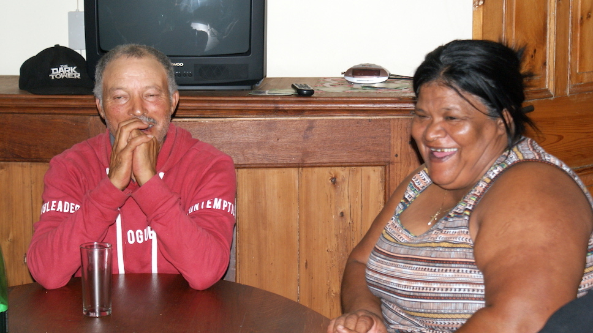

Elim
19 Februar 2018
Wir fuhren noch einmal nach Elim, da ich ausser Valerie und Andrew auch noch Karen und Peter gerne treffen wollte. Schon von Kapstadt aus, hatte ich mit Valerie ausgemacht, dass wir uns alle zum Braai (Grillen) treffen.
Direkt vor dem Gastehuis trafen wir praktischerweise Joyce, die das Gästehaus vermietet.
Sie sagte uns, dass wir das Gastehuis für uns hätten. Sehr praktisch für unser Braai!
Da wir früh dran waren, ruhten wir uns erst einmal aus, dann machten wir einen schwäbischen Kartoffelsalat.
Um 6 kam dann Valerie, die mich wie eine alte Bekannte in den Arm nahm. Die anderen kamen dann um 7. Es wurde ein netter Abend. Dieses Mal wurde sogar auch Wein getrunken.

Sascha wollte, damit ich mich mit meinen alten Freunden unterhalten kann, in der Küche die Guacamole machen.
Allerdings hatte ich nicht mehr an die alte Rollenverteilung in Elim gedacht.
Karen sagte zu mir: "Willst du nicht deinem Mann in der Küche helfen?" Ich besinne mich darauf, dass es
aus ihrer Sicht nahezu gemein von mir aussieht, dass der 'arme Kerl' auch noch Frauenarbeit tun muss.
Deshalb löse ich Sascha ab und sage ihm, dass er heute Abend bloss nichts mehr tun soll, sonst würde ich
mich blamieren. Sascha schaut ein wenig verwirrt …

Ansonsten war es wirklich sehr schön. Alle loben mein Afrikanns und Karen sagt mehrfach, dass sie mir von Herzen dankt, dass ich sie nach 23 Jahren nicht vergessen habe und sogar noch ihren Nachnamen wusste.

Sascha war beim Essen nun völlig von den Socken, als die Herren sich zuerst bedienen - die ganze Zeit
sitzen blieben und wir Frauen auch ganz selbstverständlich den Abwasch erledigten.
Nein, das kann man einem Mann nicht zumuten!

Ich habe damit kein Problem, denn solche Dinge verändern sich nicht von heute auf morgen.
Wir sitzen lange und ich werde nie vergessen wie fest mich Valerie beim Abschied gedrückt hat und mir
einen Schmatz gab.